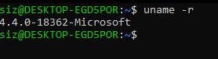
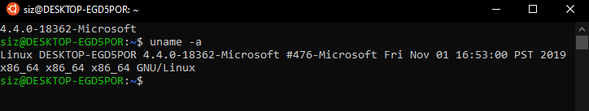
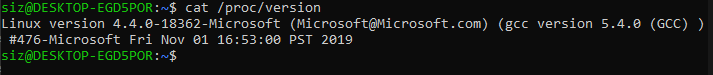
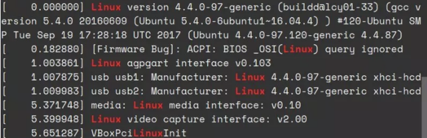

3 façons de vérifier la version du noyau Linux en ligne de commande
publié par Dev-Pro
Publié le 2 Janvier 2019 à 4:30 AM

Vous vous demandez quelle version du noyau Linux votre système utilise? Voici plusieurs façons de vérifier la version du noyau dans un terminal Linux.
Vous pouvez vous retrouver dans une situation où vous devez connaître la version exacte du noyau Linux utilisée sur votre système. Grâce à la puissante ligne de commande Linux, vous pouvez facilement le découvrir.
Dans cet article, je vais vous montrer différentes méthodes pour connaître la version du noyau ainsi que la signification réelle de ces chiffres.
Comment trouver la version du noyau Linux
J'utilise Ubuntu 18.04 LTS WSL sur Windows 10 lors de la rédaction de cet article. Mais ces commandes sont génériques et peuvent être utilisées sur Fedora, Debian, CentOS, SUSE Linux ou toute autre distribution Linux.
1. Trouver le noyau Linux à l'aide de la commande uname
uname est la commande Linux pour obtenir des informations système. Vous pouvez également l'utiliser pour savoir si vous utilisez un système 32 bits ou 64 bits.
Ouvrez un terminal et utilisez la commande suivante:
uname -r

Le résultat sera quelque chose de similaire à ceci:
4.4.0-18362-Microsoft
Cela signifie que vous exécutez le noyau Linux 4.4.0-18362 ou en termes plus génériques, vous exécutez la version 4.4 du noyau Linux.
Mais que signifient les autres chiffres ici? Permettez-moi de vous l'expliquer:
- 4 - Version du noyau
- 4 - Révision majeure
- 0 - Révision mineure
- 18362 - Correction d'un bug
- Microsoft - chaîne spécifique à la distribution. Pour Ubuntu, cela signifie que j'utilise la version de Microsoft WSL. Pour l'édition du serveur Ubuntu, ce devrait être server et pour le bureau ce devrait être générique.
Vous pouvez également utiliser la commande uname avec l'option -a. Cela fournira plus d'informations sur le système si vous le souhaitez.
uname -a

Le résultat de la commande devrait ressembler à ceci:
Linux DESKTOP-EGD5POR 4.4.0-18362-Microsoft #476-Microsoft Fri Nov 01 16:53:00 PST 2019 x86_64 x86_64 x86_64 GNU/Linux
- Linux - Nom du noyau. Si vous exécutez la même commande sur BSD ou macOS, le résultat sera différent.
- DESKTOP-EGD5POR - nom d'hôte
- 4.4.0-18362-Microsoft - date de sortie du noyau (on vient de le voir)
- #476-Microsoft Fri Nov 01 16:53:00 PST 2019 - Cela signifie qu'Ubuntu a été compilé 476 fois 4.4.0-18362-Microsoft. La dernière date de la compilation est également là.
- x86_64 - Architecture de la machine x86_64 - Architecture de processeur
- x86_64 - Architecture du système d'exploitation (vous pouvez exécuter un système d'exploitation 32 bits sur un processeur 64 bits)
- GNU / Linux - Système d'exploitation (et non, il n'affichera pas le nom de la distribution)
Je vais vous éviter la surcharge d'informations. Voyons donc d'autres commandes pour trouver la version du noyau Linux.
2. Trouvez le noyau Linux en utilisant le fichier / proc / version
Sous Linux, vous pouvez également trouver les informations du noyau Linux dans le fichier / proc / version. Regardez le contenu de ce fichier:
cat /proc/version

Vous verrez une sortie similaire à ce que nous avons vu avec uname.
Linux version 4.4.0-18362-Microsoft (Microsoft@Microsoft.com) (gcc version 5.4.0 (GCC) ) #476-Microsoft Fri Nov 01 16:53:00 PST 2019
Vous pouvez voir la version du noyau ici: Linux version 4.4.0-18362-Microsoft.
3. Find Linux kernel version using dmesg commad
dmesg est une commande puissante utilisée pour écrire les messages du noyau. Il est également très utile pour obtenir des informations sur le système.
Étant donné que dmesg fournit beaucoup d'informations, vous devez utiliser une commande comme less pour la lire. Mais pas pour le moment.
dmesg | grep Linux

Le résultat aura quelques lignes mais vous devriez pouvoir y identifier facilement la version du noyau Linux.
Comment vérifiez-vous la version du noyau Linux et d'autres informations?
Parmi les trois façons discutées ici, j'utilise tout le temps uname. Il est plus commode.